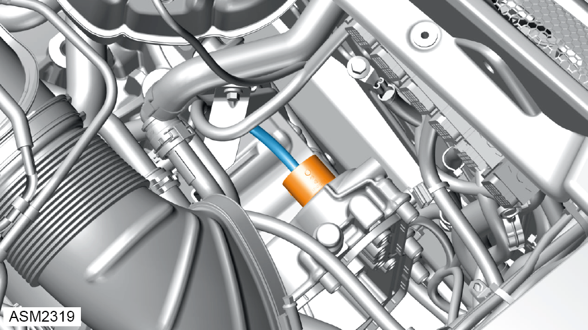
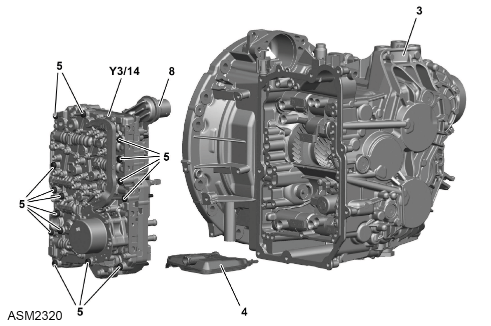

Controller Unit Assembly - 4 Cylinder
Print
Operation Code: 47.02.16-02
Important Information
 WARNING: Transmission oil is a toxic substance and can be lethal if ingested. Wear protective gloves, protective clothing and safety glasses.
WARNING: Transmission oil is a toxic substance and can be lethal if ingested. Wear protective gloves, protective clothing and safety glasses.
Removal
- If controller unit assembly is to be renewed, perform commissioning procedure using Lotus Insight tool.
- Remove oil pan. Refer to procedure.

- Disconnect harness connector from controller unit assembly.

- Remove and discard M5x60 Torx bolts (5) (x15) securing controller unit assembly (Y3/14) to transmission (3). Torque 3 Nm + 60 degrees.
 CAUTION: These fasteners have been torqued to a specification where the threads may have been damaged or stretched. Always discard and replace with new on installation.
CAUTION: These fasteners have been torqued to a specification where the threads may have been damaged or stretched. Always discard and replace with new on installation.
- Remove controller unit assembly.
- Remove and discard sealing ring (8).
Do not carry out further disassembly if component is removed for access only.
- Remove and discard oil filter (4).
Installation
- Installation is the reverse of removal procedure except for the following:
- Renew discarded sealing ring.
- Apply transmission oil to sealing ring.
- Renew discarded bolts.
- Perform a diagnostic read and clear error memory using Lotus Insight tool.